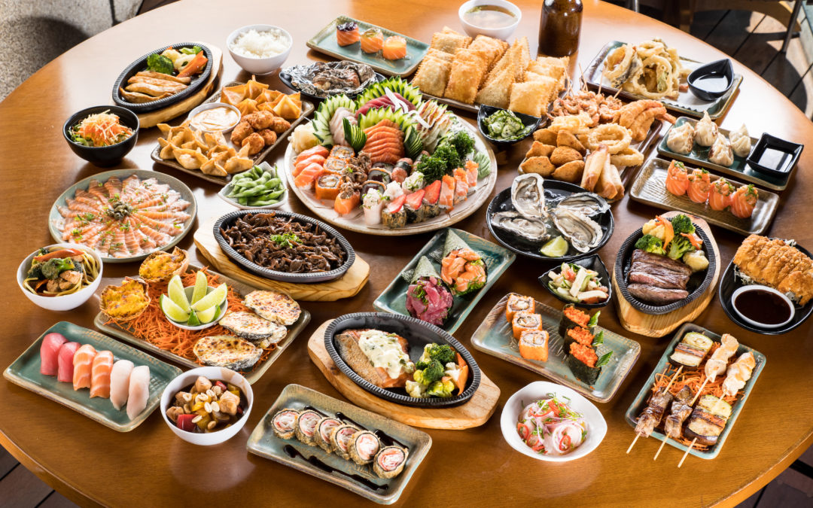

a maior delas é a honshu, onde se encontra a capital do país, tokyo mais devido a sua localização ocorre diversos fenômenos naturais, como
terremotos, tsunamis e tufões o país é considerado um dos mais sísmicos do mundo.
culinária do japão falado por yudiobana

o japão é localizado no oceano pacífico, ao leste da ásia. é formado por cerca de 6.800 ilhas, sendo que as quatro principais são honshu, hokkaido, kyushu e shikoku.
a maior delas é a honshu, onde se encontra a capital do país, tokyo mais devido a sua localização ocorre diversos fenômenos naturais, como
terremotos, tsunamis e tufões o país é considerado um dos mais sísmicos do mundo.